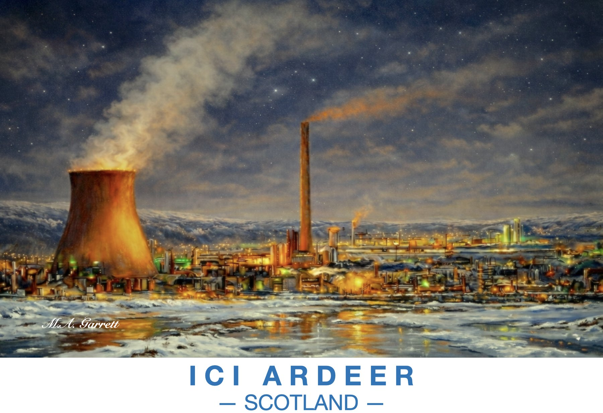

ICI Ardeer at Night
The ICI works at Ardeer lit up on a starry winter night, steam rising from the cooling tower and chimney across the snow.
Paintings of the Ayrshire coast

The ICI works at Ardeer lit up on a starry winter night, steam rising from the cooling tower and chimney across the snow.